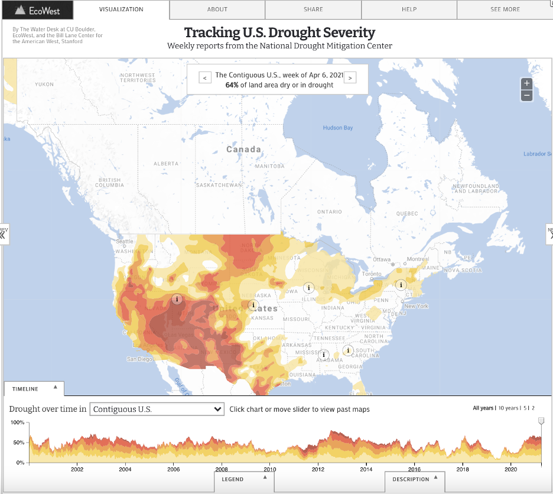
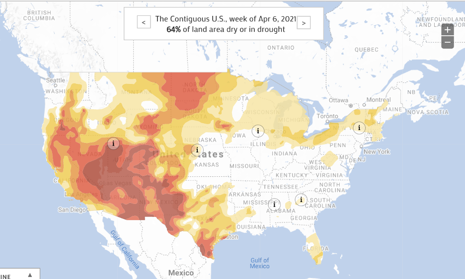
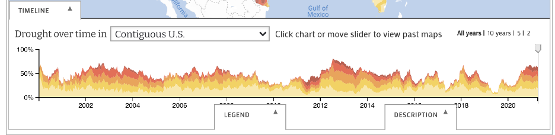
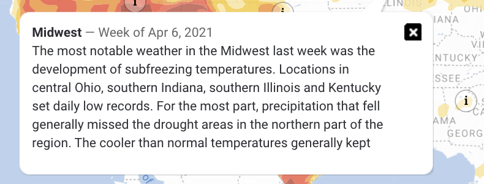
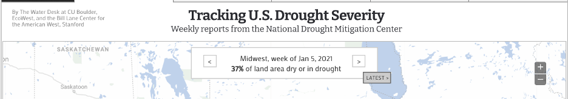
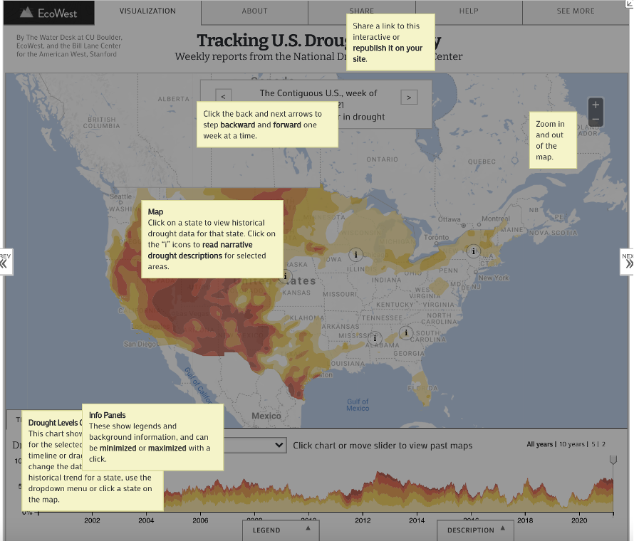
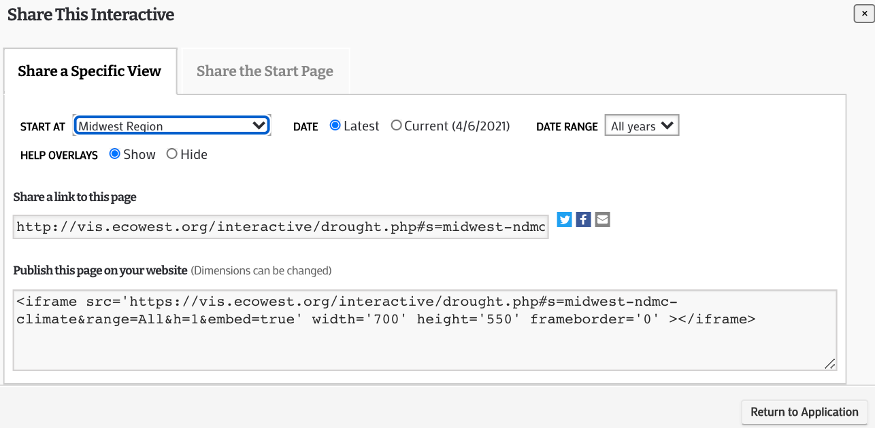

Project 2
Introduction
Even though this is Project 2 in the class, I was unable to complete Project 1 due to a death in the family.
So, this is my first CS 424 project. The goal of the project is to visualize energy sources data (linked and explained more below)
provided by Professor Johnson. This project only uses R as the programming language and was developed in RStudio.
The final application was published on ShinyApps.io web application.
3 Pages’ Objectives (How To Use)
Page 1: The landing page of this ShinyApps application showcases the map of Illinois. Here, you can view the Energy Sources graphed on the map of Illinois and the legend is visible on the bottom right-hand side. The graph plots the plant locations of all energy plants in Illinois in 2018. There are multiple checkboxes to filter by individual or a combination of energy sources or use the “All” checkbox to plot all energy plants.

Page 2: The second page lets you compare two different states during a specific year. You again have the option to filter the data by individual or a combination of energy sources or just filter by “All”. All 50 states are available under the “Select State” drop down list. Right under the state selection, you will find the “Select Year” list. Here you can choose to plot the data from 2000, 2010 or 2018. The combinations possible to plot are very high, so give it a shot!

Page 3: The third page lets you view the plant locations all over USA. Again, you have the option to filter the data by individual or a combination of energy sources or just default filter by “All”. The USA map layout also includes Alaska and Hawaii. You can view the legend on the bottom right again as the locations are filtered by their energy source type.
Data Description
As mentioned above, the data was linked to us by Professor which he got from epa.gov. I have attached the official link below and it is also available in the About section of the application. The data was downloaded from epa.gov and 3 main files were used in the creation of this application. The first file is titled “eGRID2018v2 Data File (XLSX)” and the other two files are from the eGRID historical files zip folder found towards the end of the page under “Other Historical Data”. From there, the data was processed and filtered in Microsoft Excel first and then converted to a CSV file to use in the RStudio environment. After importing the CSV files into RStudio, I renamed the columns for easier usage throughout the project. For example, changing “PLANT_NAME” column to “PLANTNAME” and “PL_OIL” to “OIL”. All 3 CSV files for the 2000, 2010 and 2018 data is available on my GitHub (linked below).
Interesting Things
There were a very few things I found interesting at the beginning of the project as I only started a few days before the project was due. It’s not that I procrastinated but that I’m enrolled in 21 credit hours as a last-semester Senior student. So, I literally have something due every day, including weekend. There were way too many bugs to begin with at the start of my project. It took me an entire day to just process and import the data correctly to the RStudio environment. However, when things started to work, I was very happy. Within the data specifically, the first thing that shocked me was the abundance of the data points within the Excel files I first downloaded. Literally, you name it, they have it type of data. I noticed how there are no Geothermal plants in Illinois. Wind, Gas and Oil are the top 3 energy sources in Illinois. There was only 1 solar energy plant in 2010 and an increase to a total of 5 in 2018 in Illinois. This was probably the biggest shocker for me for Illinois. I was really disappointed in the underwhelming number and lack of the Solar Energy Plants in Illinois. Alaska, Washington DC, North Dakota, New Hampshire and West Virginia all do not have any Solar Energy plants. Solar Energy had the highest increase in the number of energy plants from 2010 to 2018.
Links and Instructions
To replicate this project onto your own computer, start by downloading RStudio (I have version 1.4, but the latest version should work as well). Download the necessary data files and the application code from my GitHub (link below). If you want to make your own adjustments to the data, download the data from epa.gov/egrid/download-data. Store the data files and the .R code file in the same folder and open with RStudio. In the RStudio terminal/console, you will need to download the libraries that I used. You can do that with the install.packages(“libraryNameIUsed”) command. To create your own web application through ShinyApps, you will need to create your own account on their website: shiny.rstudio.com. Then connect your ShinyApps account to RStudio in the RStudio publishing settings. After connecting, you can post your application to ShinyApps through RStudio by clicking the blue icon next to Run App.
GitHub Repo Link
Shiny application Link
YouTube Video Demonstration Link

Student Choice
We will be looking at data visualization of multiple effects of the water crisis in the United States.
What is the purpose?
The purpose of this visualization is to display the effect of growth and climate change to the water crisis.
There are a total of 4 data visualizations included on the original website and the main goal of all the visuals
are to showcase how the United States is going through the water crisis in different ways in different regions
of the country. One of the main reasons to why the United States is facing this crisis is due to the major
population growth and climate change occurring worldwide.
What is the data and how was it collected?

The first data visualization is of the US Drought Severity. It maps the designations of the droughts in the United States weekly
based on the data retrieved from the US Drought Monitor who is responsible in reporting conditions across the country. Both,
the data and the map, are updated weekly and you can see in the image above that the most recent reports say that 64% of the
land area in the US is dry or in a drought. The map classifies areas based on five levels of drought/dry categories.
“Abnormally Dry - D0” is for an area that is borderline dry; that means that the area is either going into or coming
out of a drought. “Moderate – D1”, “Severe – D2”, “Extreme – D3” and “Exceptional – D4” are the other four levels of drought
levels, D4 being the worst. This data, as mentioned earlier, was collected by United Sates Drought Monitor, which is a joint
production of United States Department of Agriculture, National Oceanic and Atmospheric Administration and
National Drought Mitigation Center.
Who are the users that this visualization was made for?
The main users are people concerned with climate change, which should be everyone. As this water crisis effects the whole
country in addition to the people who are living in the areas labelled as drought areas. This data visualization is very
frequently used by the mainstream media and government policymakers who allocate relief to the areas affected by the drought.
Hence the reason why this visualization is updated weekly.
What can you do with this visualization?


This data visualization allows you to look at the Drought Severity on a national level, by every state,
numerous regions divided by plains and numerous river basins. It allows the users to look at the data starting
from January 2000 up until April 2021. You can use the slider to look at a specific week within a specific year
or you can indicate the year based on the available options of 10, 5 or the last 2 years. After you’ve selected
a specific week, you can interact with “i” on the map which contains an informational panel regarding the area
and the severity of the drought. For example, in the second image above, the information panel about the Midwest
this week is about freezing temperatures in the area and normal precipitation outside of drought areas.
Temperatures in the area were cooler than normal and decline in precipitation in the last 90 days in the upper
Midwest region. The map consists of good normal features like zooming in and out, a minimizable legend at the
bottom, consistent colors in the map and the legend, legible font on the map, etc.
What questions can be asked? How can they be answered?

One of the first questions someone might ask is the numerical value behind the dryness of an area.
“How dry is the land?” “How does it compare to X?” “What was it like during X?” You can answer some of this
easily, and the rest require some work. To find out the exact numerical value, a percentage value in this case,
all you have to do is navigate to the area at that time and you will find out the value. For example, if I wanted
to know how dry the Midwest region was at the beginning of 2021, I would simply drag the timeline slider towards
the beginning of 2021 and the panel at the top of the map tells me how dry that area was. Another question one
might ask is what the history of dryness/drought in a specific area is or what are the climate patterns in that
area. These questions are not easy to answer and require a bit of looking around within the visualization.
The information panels mentioned earlier include all of the necessary and important information one needs to
answer that question. From the picture about the information panel of the Midwest region during the week of
April 6th, 2021, lots of precipitation patterns and likelihoods are mentioned. It notes significant changes in
the weather patterns in comparison to the past and the soil moisturization difference to its previous weeks within
the area. There’s an endless number of questions one can ask from this visualization. In the about tab, the creators
included an email for the users that have any questions to reach out to them!
What works?


There are a lot of great things in this data visualization above. All my life, I’ve always been a strong advocate of
climate changes’ existence, and to have proper evidence like this map is a great plus in my books. A lot of the features
mentioned above are part of what makes this a great visualization. From having over 60+ areas that can be used as a filter
to the range of years divided by weeks in the timeline below the map, the default things are well taken care of. What
struck me the most is the Help feature included in the visualization. The help feature brings you back to the visualization
application and provides a simplified explanation of all of the features in the application. The share feature/tab is great
as well. Normally, you would expect a share feature that only allows you to share the link of the project. However, the
developers went an extra mile and implemented the ability to share a specific region at a specific time. You have to ability
to just share the link to this application with your adjustments or you can embed this application on your own website.
Developers providing HTML code to embed their application, especially a useful and significant one like this application,
is a great work.
What needs improvement?
A feature that I would love to see added is a comparison feature similar to our Project 2. Being able to side-by-side compare
two states during the same week, the same state at two different times or the United States at the beginning of 2000 compared
to now in 2021 would be a great feature to have. Having the option to change the type of map to a satellite version or a
version where you can somewhat visually see the “dryness” or the drought on the map itself would really help the audience
understand the purpose behind the visualization more. Although it is not necessary, but I believe that if they reformat the
whole website user interface to be more user friendly, it would be really nice. Right now, there’s a lot of wasted space and
all of that can be fully optimized and potentially make this data visualization even better.